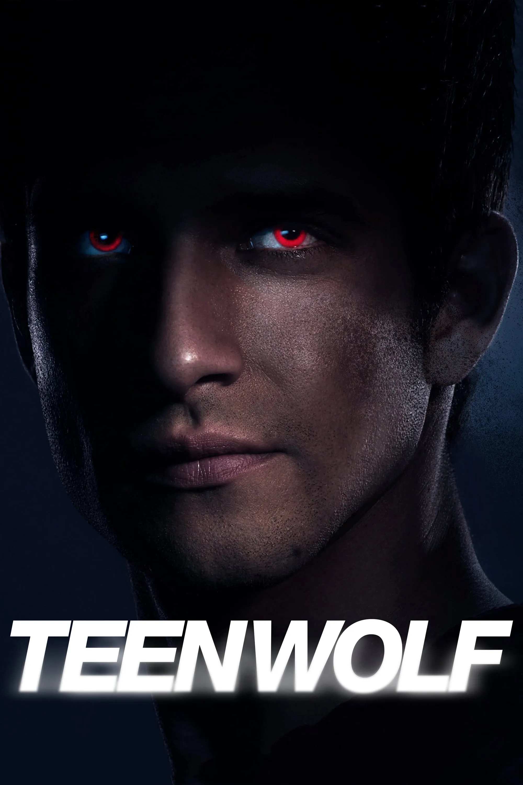
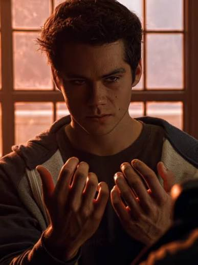
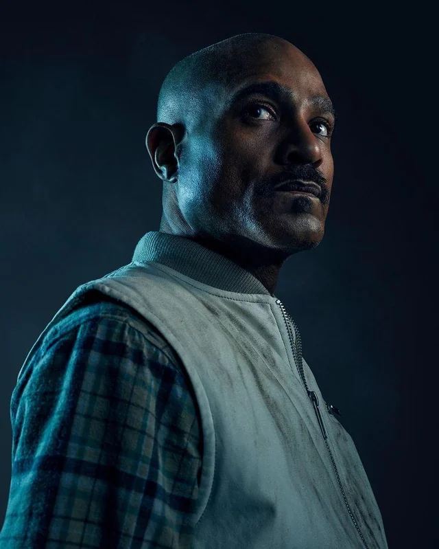
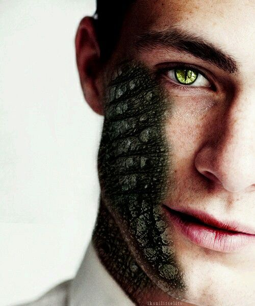

Світ перевертнів!

Істинний альфа
Істинний Альфа досягає цього статусу виключно завдяки власній силі волі, праведності, доброчесності та лідерським якостям.

Стайлз Стілінскі
Стайлз — звичайна людина, яка не має надприродних сил (іклів, кігтів чи супершвидкості). Проте саме він є «мозком» зграї та її стратегічним центром.
.jpg)
Банши
Передвісниця смерті. З часом банші вчаться використовувати свій крик як акустичну зброю — спрямована звукова хвиля може відкинути ворога, розбити скло.
.jpg)
Кіцуне
Дух лисиці-перевертня, яка володіє магією, довголіттям та здатністю керувати електрикою і блискавками!

Друїд
Він володіє колосальними знаннями про магію, чарівні рослини та інші міфічні істоти.!

Каніма
Гуманоїдна ящірка з довгим хвостом, кігтями та зеленими очима із вертикальними зіницями.
Чому я люблю цей серал
Творчість без меж
Справжнє мистецтво сценарію полягає в створенні героїв, які розвиваться. Коли я аналізую шлях від слабкого, невпевненого хлопчика до справжнього «Істинного Альфи», який веде за собою інших завдяки внутрішній силі, а не жорстокості — я бачу код ідеального лідерства. А персонажі на кшталт Стайлза Стілінскі доводять, що найбільшою суперсилою в будь-якому світі є людський інтелект, відданість і гумор. Найкращий серіал створює простір, у який хочеться вірити. Коли вигадане містечко стає для мільйонів людей другим рідним будинком, а його вигадані правила (як-от залежність перевертнів від повного місяця чи властивості горобини чи омели) обговорюються на форумах палкіше, ніж реальні наукові теорії — це означає, що автори доторкнулися до чогось сакрального. Найдивовижніша частина мого спостереження за серіалами — це те, що відбувається після фінальних титрів. Найкраща історія не помирає, коли гасне екран. Вона продовжує жити у тисячах художніх творів, які фанати пишуть самі, у малюнках, у міжнародних фестивалях. Серіал стає мостом між людьми, які ніколи б не зустрілися в реальному житті, але тепер мають спільну мову.
Люби, бійся, борися та будь собою!